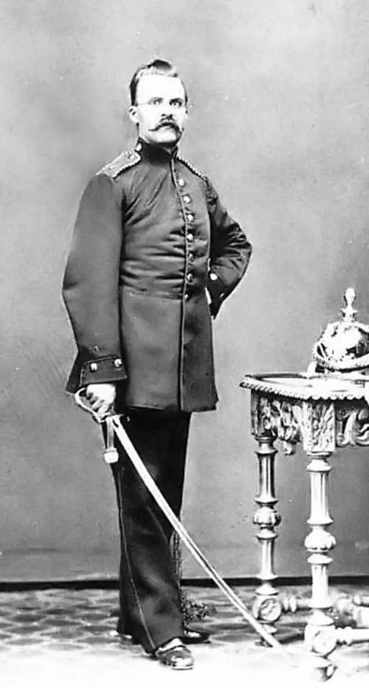

《善恶的彼岸》 读后总结
摘抄
哲学只学会了一件事，就是按照自己的形象去塑造已知世界；哲学的本质就是这种行使霸权的冲动，是一种纯粹精神性的，对权力、造物以及【第一原因】的追求。
任何单一的哲学理论都不是随意产生的，也不可能完全依靠自己而独立产生的，它们都是从彼此的关系与传承中衍生而来的。
在进行各个语种之间的翻译时，最难做到的应该就是保持源语言风格的节奏：民族性格决定了一种语言的文本，从生理学的角度来看，我们可以把这种性格理解为一个民族“新陈代谢”的一般节奏。
选择独立的，是这个世界上最小众的一群人：唯有强者才能或获此殊荣。
假如一个人想要呼吸清新的空气，那么他就不要到教堂去。
哲学家，是至今为止这个世界上被愚弄得最惨的一群人，他们“脾气不好”完全是合情合理的，现在的他有怀疑的义务，也有站在怀疑的深渊里带着恶意观察一切的义务。
"如果求真知只是为了做好事" 。那我敢说他最后只能竹篮打水一场空！
作为最后一个心理学家（司汤达），他说：“要成为一个优秀的哲学家，就一定得是干枯、清楚的，还要拒绝想象。一个事业有成的银行家，身上就具备了一些想要做出哲学发现而不可或缺的素质，那就是能够明确看出事物本质的素质。”
想要跟大多数人达成共识的坏趣味一定要改掉。
"公益"又怎么可能是真的会有！这个词本身就有一个很大的矛盾：能够被共享的事物，其价值必然不多。从古至今，事实一直如此：伟大之人做伟大之事，深沉之人迈向深渊，精细之人谨小慎微。总的来说，只有那些凤毛麟角的人才配得上稀有的存在。
我们相信，强横、残暴、奴役、人心险恶、怪异、斯多葛主义、巫术以及恶念，人类周围所有蛮不讲理的、坏的、令人惧怕的东西，所有跟食肉动物和蛇类似的东西，作为与人类为敌的存在，都在为人的自我完善和提升做出了很好的贡献。
我们感谢贫穷和变化多端的疾病，因为它们能帮助我们摆脱一些固有的规定以及由此而来的偏见；感谢上帝和魔鬼，还有我们之中的绵羊与蠹虫。作为一个好奇者要好奇到它成为一种恶习，作为一个研究者要将研究进行到残酷的地步，毫不犹豫地把手伸到难以捉摸的对象上，用牙齿和胃来对付那些最难消化的东西，把敏锐和敏锐的器官运用到所有需要它的工作当中，随时都可以去冒险。
古希腊人所有宗教当中，最令人惊讶的莫过于那种丰富到已经满溢出来的感恩之情：他们是一个崇高的民族，他们对自然和生命就抱着这样一种感情！随后，无知的人成了大多数，宗教之中也开始滋生出恐惧；基督教已经整装待发。
宗教有办法让他们对自己所处的环境和阶级完全的满足，让他们的心灵能够在更多层次上被安抚，让他们的顺从看起来更加高贵，让他们更远于与和自己处境相同的人经受苦难。
宗教全心全意在做的无非就是让那些病人和罹难者得以保全，也就是从根本上让整个欧洲的人种都变得更加低劣，除此之外，这些宗教还能做点什么呢？
基督教是至今为止后果最为惨烈的一次对自己的拔苗助长。人类没有这么高级和强大，不能够成为艺术家并在人类身上表现出来；人类没有足够的视野和坚韧，还不能依靠那种高尚的克己，把自己完全托付给那个可能会带来千百倍的失败与毁灭的前台法则；人类没有达到足够高的等级，不能看到人与人之间那种天堑一般的差距，以及不同等级和次序之间的差别；时至今日，这些人已经用那套“上帝面前人人平等”的理论掌控了整个欧洲，最后就是一种被渺小化的甚至是滑稽的种族，一群无知的畜类，一种十分友善的却满脸病容的平庸之人，也就是现如今的欧洲人，他们最终被培养成人了。。。
如果一个人空有才华，而不具备其他品质中的至少两种－－感恩和纯粹，那么他将无法承受自己的才华。
一个人的性爱情况所能达到的等级与高度，与其精神的峰值相对应。
于是男人对女人怀着安宁的期待，但女人的本质就是无法安宁，她们就像一只猫，就算已经能娴熟地向人们展示宁静的外表。
女人在两种情况下会比男人更加蛮横：恋爱和报复。
有自己的下半身作为证据，人就不会那么容易自诩为神明。
与恶龙缠斗过久，自身亦成为恶龙；凝视深渊过久，深渊将回以凝视。
自杀意识是一种很强大的自我安慰：在很多个糟糕的晚上，人们都是依靠它安然度过的。
很明显，无论在粗放还是细致的角度上看，奴役都是精神培养的必要手段。也许人们应当从这个角度来看待所有的道德：这是蕴含在内的“自然”，它让人对过度自由和顺其自然感到厌恶，它的需求都是从有限的视野和眼前的使命中生长起来的，它限制了人们的视野，在某些具体意义上，它将愚蠢作为生命与成长的前提进行培养。
人类从古至今，从本源上就已经－－对谎言习以为常。也可以，按照一种更加虚假的和符合道德审美的方式，简单点说就是更婉转一点的方式来表达：人们远比自己以为的，更像一个艺术家。
现在欧洲的这些无知群众也开始自恃身份，就好像这些人才是真正的合法人类一样，他们还把那些对培养无知有益的，那些让他们变得顺从和平易近人的那些特质加以美化，变成人类真正的美德：这些特质就是公理心、热忱、关心他人、勤奋、中庸、谦逊、体谅、同情。
人们认为那种崇高且独立的精神、不与人为伍的愿望，还有伟大的理性都是危险的；所有能够让个体超脱于众人，并且令众人感到畏惧的存在都是邪恶的；而通情达理、谦和、安分守己以及平等的态度、适度的欲望都被认为是道德的，都能获得道德勋章。最后，在这种只求和睦的氛围里面，机遇和急迫感再也没有立足之地，他的感受也不可能再一次被培养的严肃和坚强；所有的严肃，就算是公正的严肃也会给良心造成困扰；而那些超凡的、强有力的崇高风尚以及勇于承担自己责任的行为，却有可能被人猜忌和羞辱，“羔羊”，甚至“愚蠢的羔羊”却会赢得尊敬。
我们，信仰不同思想的我们，相信民主运动不只是政治组织败坏的表现，更是人类败坏的表现，也就是被渺小化的表现，人类由此变得中庸，由此而贬值：我们的希望究竟要到什么地方去寻找呢？只有一个选项，就是新哲学家们；那些精神们，它们是强大的、原始的，并能够完全颠覆现有价值标准、推翻“永恒价值”、重新建立价值标准；就是那些提前到来的，属于未来的人，现在他们正在维持那个可以将千年以来的固有思维绑在轨道上的绳索。
人类朝着完全的无知生物（或者用他们的话说，朝着“自由社会”公民）发展成为更渺小和退化的，人类朝着权利平等的那种矮小动物发展的一种生物退化，这种可能性是非常肯定的！
一个人如果不再敬畏自己，就等于放弃了命令的权利，放弃了统治者的身份。
小政治的时代已经走向终结：在下一个世纪人们需要抢夺的是全球统治权，必须迎来大政治。
真正的哲学家就应该是领袖和立法者：他们说：“理应如此！”，他们先要确定人类前进的方向和行动方法，然后再分配给所有哲学劳动者以及历史征服者各自的准备工作，未来就掌握在他们的创造之手中，所有现在的和过去的存在，都将会成为他们的方法、工具，成为他们手中的锤子。他们的“认知”即是创造，他们的作品就是立法，他们追求真理的意志－－就是追求权力的意志。
自己的使命就是成为自己所处时代的坏良心，这个使命是残忍的，他们在无意之中获得却又没有办法逃避，他们使命的伟大最后竟是体现在了这里。
他们口中说的是“追求幸福”，但实际做的是追求享乐。
现在的欧洲，只有无知粗鲁的人能够拥有并支配荣耀，“权利平等”就这么轻易地被颠倒成了权力的不公正。
那些可以变成孤独的、最隐蔽的、最遗世独立的，能够站在善恶之彼岸的人，能够主宰自己的美德，拥有权力的人，才是伟大的人；这些则可以称为伟大：这种既丰富又完满，既广泛又充实的。
只要是以人生苦乐，也就是这种伴随状态与附加效果来衡量事物价值的思维方法，都是前台思维，都是一种无知的体现。
我们表示的同情是更加高瞻远瞩的那一种：我们看到人类是怎样把自己变得渺小的，也看到了你们是如何让他更渺小的。
你们所认为的那种安宁喜乐，绝对不会是目的，我们倒觉得那反而是在走向灭亡！这是能够让人在短时间内就变得卑鄙可笑的东西，它让人们以自甘堕落为目标！苦难，伟大苦难的教导－－难道你们竟不知道，至今为止人类所有的提升都是通过这种方式实现的吗？
但要重申一次，还有比人生苦乐以及同情更高一级的问题存在；如果一个哲学关心的只有这种问题，那么就是它的无知。
如果正直是我们无论如何都不能割舍的美德，那么我们这自由的精神们－－就让我们带着所有的爱与恨去履行这一美德吧。
我们在意的是，自己站在正直的出发点上，会不会最后仍旧走上那条神圣和无聊之路。
"普遍福利"不能作为希望和目的，也不是一个能够被人类掌握的概念，这不过是一剂催吐药，对于一个人来说理所当然的事，不见得对另外一个人也是，让所有人共同遵守唯一的道德准则，对于一些高等级的人类来说肯定是有害的，简单说来就是人与人之间需要等级划分，道德与道德之间也需要等级划分。
在女人眼里，真理从来都是最陌生、最不正义的最大的敌人，女人最伟大的艺术就是谎言，女人最重要的工作就是虚伪的表象和美丽。坦白说，我们这些男人：我们最喜爱的正是女性身上这种伟大的艺术和本能：我们在这方面并不顺利，我们天生愿意同这些能带来轻松快乐的人为伍，她们那双手、双眼以及温柔的痴顽，让我们的严肃、沉稳和深刻也变得痴顽起来。
一直到今天，女性都是被丈夫当成小鸟来对待的，这些鸟儿迷了路，便从某一处高空落到他们眼前：他们觉得这是某种更精致、更脆弱、更狂野、更珍奇、更甜美、更富有丰富灵魂的小东西，不过这个小东西也一定要关进笼子里，不然它们就会飞走了。
德意志风度与声音和耳朵完全不相干，这说明了一个情况：我们那些优秀的音乐家们刚好写得超级差。德意志人不会大声朗读，因为他们缺少能够读出声的耳朵，他们的阅读纯粹只靠眼睛：这个时候耳朵已经被锁进抽屉了。
德意志最伟大的散文作品正是出自布道者之手：至今为止德意志出现过的最好的书籍就是《圣经》。
所有民族都拥有那种被自己冠以美德之名的，自己特有的伪善。
可以肯定的是，整个欧洲目前所有的种族之中，犹太人无疑是那个最强大、最坚韧，也最纯粹的一支；就算是在最差的条件下，他们也知道要怎么实现自己想要的（其结果可能要比在条件有利的时候还要好），他们仰仗的正是如今被人们认定为恶习的所有美德，最需要感激的就是那种坚定的信念，不管在任何一种“现代理念”面前都不会自惭形愧；他们在进行自我变化的时候，永远都想俄罗斯人在扩张领土的时候所做的一样，那个并非存在于过去的并且掌握了时间的帝国：简单说来就是始终坚持一个准则，“极尽缓慢之能事！”一个思想者如果把欧洲的未来也放到了自己的良心中，那么不管他对于未来有怎样的一种规划，都不可能漏掉犹太人，就像不会漏掉俄罗斯人一样，因为这两个种族应该是未来最稳定也最具备可能性的两个因素。
而那种对基督教义的严格遵守正是这个种族非哲学的明显特征：他们要培养一种“道德”与人性的品质，跟德意志人相比，英国人更忧郁、缺乏理性、残忍而野蛮－－正是出于这个原因，作为两个种族之中更缺少天才的那一个，英国人也更加虔诚：他们甚至还对基督教有了一种急切的渴望。
最后要记住一点，这些英国人已经运用自己那深刻的平均主义，让欧洲精神承受过一次普遍性的压抑：就是那些被人们称作“现代理念”“十八世纪理念”或者“法兰西理念”的东西－－也是那个德意志精神因其强烈的反感而站出来坚决反对的东西－－有一点可以肯定，这种东西正是起源于英国。
欧洲贵族－－在其所代表的所有高级含义里，也就是感觉、趣味和礼仪方面－－正是法兰西的发明创作；欧洲的平凡，现代理念中的平民精神－－正是出自英格兰。
直到今天，“人类”这一种群的每一次进步都是贵族社会的杰作－－这一点会一直持续下去：这种社会相信人与人之间存在一个等级与价值的长梯，而且不管出于任何一种考虑，都不能没有奴隶制度。如果没有了这种等级差距的激动，没有这种在与生俱来的差距下，在统治种姓长久以来对下层阶级和工具们的俯视和远眺中，在长时间学习命令与服从、压迫与隔离的过程中产生的激动，那么另外一种更加不为人知的激动也就不可能出现，也不可能渴望灵魂内部一直会有新的距离并不断扩大，不可能演变成一种越来越高级、罕见、遥远、开阔和博大的状况，也就是说不可能出现“人类”的进步，不可能有－－用一句超越道德意义的道德术语说－－不断进行着的“人类的自我克服”。
高尚的种姓永远都发迹于野蛮的种姓：他们在灵魂上要比肉体上具备更强大的力量－－这些人是更加完整的（意思就是，这些人在任何意义上都更像一个“完整的野兽”）。
贵族阶级的基本信念必然如此：社会并非因为社会而存在，只是作为一种建筑基础和脚手架而存在，因为一些被挑选出来的造物需要去完成一些更高级的使命、就其本质就是为了成为某种更高级的存在而向上攀缘：它们就像爪哇岛上一种被人们叫作斗牛士藤的向阳攀缘植物，一直以来用自己的藤蔓不断地缠绕在橡树的枝干上，以此为支撑，最终超过它，沐浴在自由的阳光下，舒展花冠，彰显自己的幸福。
生命的本质就是对弱者与无关紧要者的伤害、征服和占有，就是一种方式独特的霸道、压制和胁迫，是吞噬，最低限度也是剥削，但是人们为什么总是要使用这些带着诋毁意味的词汇呢？
生命的本质就是追求权力的意志。
剥削是有机生命的一项基本功能，来自生命的本质，是一种真正的权力意志，也就是生命意志产生的结果。如果上面是一种理论上的创新，那么在事实上这不过是忠于历史真相：人们理应对自己坦诚如斯！
贵族之中有一个基本的共同认知，那就是平民阶级谎话连篇的。
高贵的人类认为价值是由自己决定的，他们并不觉得他人的赞美是必须的，他们认为“对我不利的事情，就可以被认定为恶本身”，他们知道事物之所以可敬正是因为自己，所有价值都是他们的杰作。他们的一切自我认知在自己看来都是可敬的。
高贵的人会对遭遇不幸者伸出援手，但是其中不会掺杂或者几乎没有同情的成分，准确地说这只是一种过剩的权力外溢而产生的欲望。
这些人有自己的信念和骄傲，他们由衷反对和批判这种“无私”的情怀，也会时不时小心且有点轻蔑地看到同理心与温柔，以上这些都可以确定地被算作高尚的道德。特权阶级知道该如何表示敬重，这是属于他们的舞台，他们在这方面拥有卓绝的天才。对年纪与出身表示出深切的敬重－－这种双重敬重是非常合乎情理的－－厚古薄今的理念与偏见，是一种典型的贵族道德；反之，那些相信“现代理念”的人类却几乎对“进步”与“未来”的信念作为一种本能，对年长之人越来越不敬重，将这种“信念”不高贵的出身暴露无遗。
人类的义务仅仅是针对同类而言，作为低等级存在或者完全陌生的存在，人们可以完全自主裁决或者说“看心情”办事，而不管自己怎么做都已经站在“善恶的彼岸”：就应该这样对待同情者和他们的同类。具备长久地感激或报复他人（他人即同类）的能力与义务，完全彻底地坦诚相待，对待友情一丝不苟，对手则是不可或缺的存在。
奴隶道德及其性质中包含的是一种对于自由和幸福的期待，对自由的各种精细的感知；而贵族道德中则常常体现出一种对敬畏与牺牲精神的陶醉与技艺，这正是一般性的贵族思维与贵族价值标准的特点。
虚荣的人身体里流着“奴隶”的血液，是努力刁蛮之气的残留－－而如今，在那些女人身上，还有多少“奴隶”的残留啊！
所有贵族在道德上都是严厉的：他们认为严肃本身就是美德，是公正性的一种。
一个人的血液中一定会流淌着跟父母和祖先相同的品性和趣味，无一例外：就算他有一个与之反差极大的外表也一样。这是由种族决定的。如果一个人了解自己的父母，那么就可以判断自己的子女：如果父母身上存在一些不道德的放纵，或者是阴暗的妒忌心里，又或者是某种愚蠢的狡辩－－这三种品质共同创造了所有时代的无知群众－－那么同样的，子女身上也一定会存在这些东西，这就如同被玷污了的血统；通过最好的教育和教化，能够达到的最理想的效果也只是将这些问题掩盖起来。
人类高尚灵魂在本质上就是利己主义。
此即正义。
无论是过去还是现在，只有那些最相似和最平庸的人类占据优势，而那些被挑选出来的、更加精致的、罕见和难以理解的人类则成为弱势群体，他们总是孤独的，因此也容易遭受意外磨难，更难延续下来。
重大的痛苦可以成就高尚；这是一种筛选。
一个人若是以伟大为目标，那么他一生中遇到的所有人，或成为他的工具，或成为他的障碍－－或者成为他暂时的休憩之所。只有当他达到了自己想要的高度并成为主宰的时候，他才有可能对同类表达出自己独有的那种教导的善意。
与被人误解相比，深刻的思想家更害怕被人理解。被人误解，他的虚荣心会受折磨；而被人理解，他的内心与同情将受折磨，它会痛呼：“哎，你们怎么会想要变得像我这么沉重？”
总结
善恶的彼岸，中文翻译的太婉转了；就像圣经，完全曲解了原来“约定”的意思。书名的英文是 Beyond Good and Evil，意即超脱善恶。什么意思呢，就是作者通过这本书传达出一种世界观，即强者为尊；强者认为对的事情即正义，超脱善恶的评判之外。也就是书中所说的“人类高尚灵魂在本质上就是利己主义，此即正义”。从政治立场上看也就是极右－－社会达尔文主义。后续小胡子发动二战的政治动员与此一脉相承－－强即正义。
虽然从我们现在的角度看这本书的思想很有问题，但是并不妨碍我们去理解它里面的逻辑。德意志通过三次战争实现了统一，分别是1864年的普丹战争，1866年的普奥战争，1870年的普法战争；此时的美国也爆发了南北战争；而在遥远的东方，刚刚爆发了第二次鸦片战争，中国苦难的近世才刚刚开始。本书1885年动笔，1886年完成；而此时距离第一次世界大战也只有30年的时间了，是真真正正的大争之世。

24岁着普鲁士军装的尼采
在这种乱世之中的新生德国是一种典型的军国主义，而尼采则反映了此时德国的这种思潮。大概总结本书的中心思想就是：
- 社会达尔文，强者生存，弱肉强食。只有这样，只有经历苦难才能让整个种群进步，就像自然界一样，必须要优胜劣汰。
- 血统论，种族论。“子女身上也一定会存在这些东西，这就如同被玷污了的血统；通过最好的教育和教化，能够达到的最理想的效果也只是将这些问题掩盖起来。”
- 贵族论。他认为基督教是“激进宗教”，即人类还没有进步到能够人人平等，而仍应该通过经受苦难，高等级的人类带领（剥削）低等级的人使种群进步。这种激进的平均主义使得人类变得平庸而非进步（而这其中，作者认为贵族品味的代表是法国，平均主义的代表是英国，德国作为一个新兴国家应该走贵族的路）；“权利平等”代表着权力的不公正。
- 自然与“文明”是反义词。自然实际上是公正的，而文明则让人愚昧、顺从。特别是当时人人平等的风潮把一些使人们变得顺从和平易近人的特质，也就是“奴隶的品质”，变成人类真正的美德，包括公理心、热忱、关心他人、勤奋、中庸、谦逊、体谅、同情。
- 对于像同情这类人的感情，作者认为是平庸的品质，强者不应该具有。强者同情弱者并不是因为感情上这么认为，而是因为行使自己权力的一种欲望；高尚的人追求经受苦难而进步，平民则追求享乐而平庸。
看这本书的过程中，不由就想到了我国战国时期，当时的秦国在商鞅变法之后，实际上也采用了类似的军国主义的策略。《商君书》中也有类似的描述，例如尼采提到的平民主义口中说的“追求幸福”，实际上却是追求享乐；而商鞅也说过“今世之所谓义者，将立民之所好，而废其所恶；此其所谓不义者，将立民之所恶，而废其所乐也。二者名贸实易，不可不察也。”都是说当政者对于所谓的“民主”一定要认清楚，不能为了“仁义”“民主”的名，就使得整个族群变得平庸。
但是呢，越是看起来相似，实际差的就越远，还真是“名贸实易”。作为乱世中的哲学，主题都是竞争，格调却差了很远。德意志的哲学就是你死我活的达尔文主义，弱肉强食。而我国的法家，虽然最终的结果客观上使得秦国成为了一架高效的战争机器，但是他的立意却是现今的民风坏了，企图用法令的方式重塑民风，也就是“古之民朴以厚，今之民巧以伪”。民风回归之后，国家自然就会强大。即法家最终的目的仍然是企图塑造一个正义的社会，而德国的哲学则是回复到一个弱肉强食的“公正”社会。
PS：(这本书看的过程中有很多很多错别字，也不知道是怎么校对的，还是说现在很少人喜欢看这种书了？)